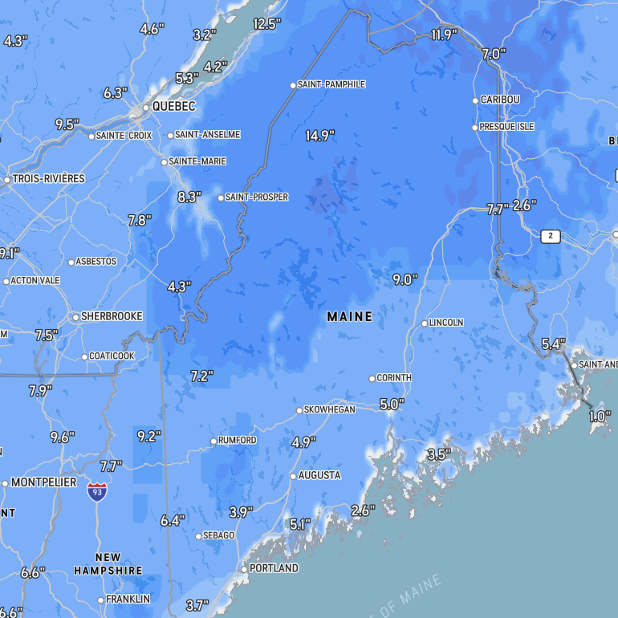

⚙
For you
Trending
COVID-19
News
Sports
Entertainment
Trending in Science
Starship
55.5k Tuits
Trending • Sports
Joe Rogan
5,218 Tuits
The New York Times
• Yesterday
CNN's Cuomo conundrum: A star anchor with a brother in trouble
COVID-19 • LIVE
COVID-19: News and updates for Massachusetts
Bloomberg Opinion
• Yesterday
Thinking about getting a booster? Read this first.
Weather • LIVE
Northeast battered by three successive snowstorms.
